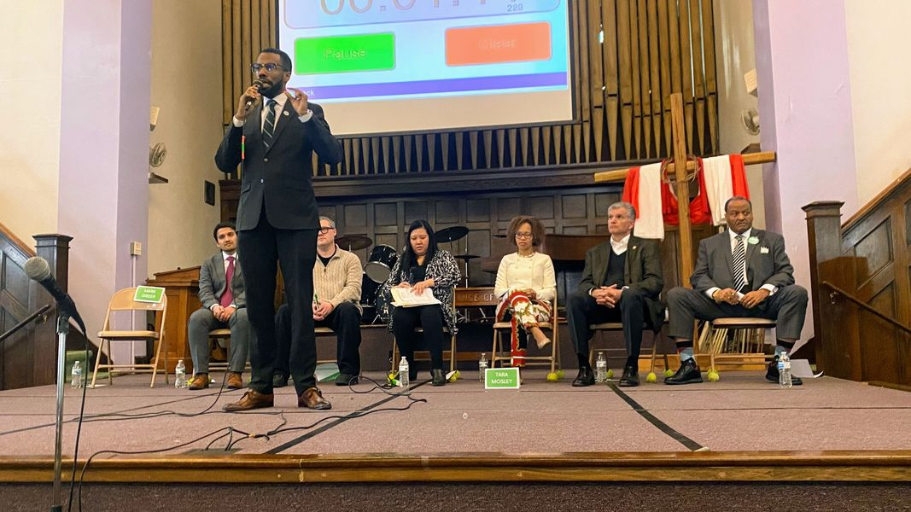

Timeline photos
MY FINAL ANSWER ON WHO SHOULD BE THE NEXT MAYOR OF AKRON OHIO
Here Are My Rankings For Akron Mayor After The Saturday March 18 2023 Forum
First: Tara Mosely
Second: Mark Greer
Third: Shammas Malik
Fourth: Marco Sommerville
Fifth: Jeff Wilhite
Sixth: Joshua Schaffer
Seventh: Keith Mills
I thought it might be useful to talk about my biases. Each time I do these rankings after a debate I ask myself if I’m letting certain biases weigh my thinking.
For example, as people, I don’t really like Shammas Malik and I REALLY like Marco Sommerville. There are a couple underlying motivations for this. I have a natural tendency to not think much of intellectuals. I have a problem with them. They think too much of themselves because they got an advanced degree. I believe anyone can be brilliant if they make the topic narrow enough. So then they get a big degree and then all of sudden they think they know everything about everything. And it turns out that their myopic decades of study has made them actually mentally retarded in things like how to fix a tire or how to replace a door handle.
I’m a grinder. I like working hard and slogging through the mud and the muck. Marco Sommerville seems like a salt of the earth kind of guy. He’s a businessman, which carries a lot of weight with me. And he’s super charismatic. I talked one-on-one with him after the debate. I don’t know how you cannot like the guy. I want to be Marco’s friend.
Before the event I got to talk with Darnell Davis. He works on Marco Sommerville’s campaign. He’s a young guy that is super cool and enthusiastic about Marco. He said Marco took him under his wing while he was a poly-sci student at the University of Akron. He is now a Government & Politics/Academic Instructor at the University of Akron.
Because of my discussion with Darnell before the event I went in with a really open mind about Marco. I was pretty hard on Marco for his performance at the last debate. If a really cool guy like Darnell likes Marco I felt like I needed to clear my head and open my mind to Marco.
On top of that, at the first debate Marco asked me if we could have a picture together. That was extremely flattering and kind. As a guy with serious daddy issues and sees political figures as celebrities with power, I was really taken aback by him wanting to take a picture with me. Most people in real jobs run like the wind when I come around. They don’t want anyone to know that they might be friends with me.
So, I started today’s debate with an open mind about Marco. If anything, I was feeling positive about him.
But he just couldn’t do it.
The people he’s running against are younger and are more aware of current issues like mental health, addiction, trauma, homelessness and the power of community and collaboration.
We got to ask questions from the audience today. I asked a question about how to handle unsheltered homeless people.
Tara Mosely has been to our encampment. She would bring supplies and food to us. She uses the word “houseless.” She is open to tiny houses.
Mark Greer might be an honest-to-god genius. He had homeless stats at the ready. He knows about rapid rehousing. He believes in housing first and then treatment (I’m not a housing first person. But he clearly is open to this topic.)
Shammas Malik knows about the Pallet tiny houses they are using in other more progressive cities. He said straight out he’d do tiny houses.
Jeff Wilhite is the president of Family Promise which houses homeless families. He said that the first thing you need to do is get everyone warm, dry and safe. That is right out of Maslow’s Hierarchy of Needs. He said that we need to learn to respect other people. He said that we have to be open to the idea that some people don’t want to be inside. He said that leaving people out on the street is “not who we are.”
Keith Mills has actually been homeless. He is now a teacher with a master’s degree. Lived experience is a powerful tool.
Marco Sommerville said “certain people want to stay homeless.” That’s false.
Let me break down the difference between what Marco said and what Jeff said. Jeff said that some people don’t want to be inside. That’s true. They have anxiety in closed spaces. Saying it the way he did shows that he empathizes and understands the needs of this community. When someone says “certain people want to stay homeless” it is saying that these people are beyond help. That they don’t want help. That’s absolutely false. If you hand someone some brussel sprouts and they turn them down you can’t then say these people don’t want help. All that means is they don’t want brussel sprouts. We have to meet all people where they are right now, not where we wish they were. Jeff clearly gets that. Marco doesn’t get it.
I can’t say it enough. I like Marco Sommerville. But we need a leader who is in tune with current thinking and ideas.
Unfortunately, he isn’t that leader. I’m truly sorry. I want him to be that leader. And even more unfortunately, he’s probably going to win.
The vote is going to get all split up. Jeff Wilhite is going to take a large part of the white male vote. Shammas Malik is going to get some younger voters and a large chunk of Ward 8. Tara Mosely is going to get a lot of women. Tara and Marco are going to split the Black vote and then institutional voters will vote for Marco. I predict Marco is going to win with 36-42% of the vote.
The positive part of Marco is that he gives young Black people a chance. He is open to working with young people. That could be great. But what he does for addiction, homelessness, mental illness is probably going to be pretty minimal. And I really don’t know how much power he has with the police and the police union. I think he will try to work on policing. But I just don’t know what he will have the power to change. I don’t think you can actually get rid of the “bad apples.” I think they are protected by the union.
Marco also likes to talk about all the houses he’s torn down at Summit Lake. And then he’s going to build new houses at Summit Lake. He said that current residents will get the first shot at those houses. But how much are these houses going to cost? Will average people be able to afford them?
Another bias I have is towards the Black candidates and the half Pakistani half Irish candidate, Shammas Malik. Their racial background is a huge positive for me. I’m tired of old White men running everything. I’m often embarrassed by their complete lack of ability to understand other people. Don’t get me wrong, white men have good things to offer the world. But we just need to get out of the way. We need to step back.
Shammas grew up in a Muslim community in Akron. That appeals to me a great deal. I would love for us to have a Muslim mayor. But I think it’s more important to have a Black mayor.
The message a Black mayor sends to the Black community of Akron is critically important. Ward 8 really needs to back a Black mayor. I have a feeling Ward 8 is going to be divided between Shammas, Tara and Marco. Shammas is pretty well liked in Ward 8. But I really wish they would throw their support behind Tara. But because the symbolism of a Black mayor is so important right now, I wouldn’t hate it if they backed Marco.
When I first did these debate reviews, after the first debate my top 3 were:
1. Tara Mosley
2. Marco Sommerville
3. Shammas Malik
I think that’s going to be my final answer.
I’d like Mark Greer to be in the number 2 spot. But he just doesn’t have the machine in place to win this time around. So, when I think about who could actually win, and the importance of a Black mayor, I might just end this thought process for me with:
1. Tara Mosley
2. Marco Sommerville
3. Shammas Malik
People have very specifically come up to me and said Marco Sommerville isn’t right for the job. Maybe he is (Darnell Davis thinks he is). Maybe he’s not. I don’t know. But if we really want to support the Black community I believe we need to support a Black candidate.
Marco talked to me after the event today. We were walking about 10 feet away from each other. He yelled out my name, “SAGE LEWIS!” I yelled back “Mr. Sommerville.”
We had a wonderful talk. Like I said, he’s an incredibly likable guy.
He said he didn’t need this job. But he wanted it to help the community. I told him I was worried about all the rich donors sending him all that money. I told him I was afraid they were going to want a return on their investment. He said he will do what he wants to do. I believe him.
He said “you don’t need this either,” meaning the work I do for homeless people and the such. He said “you do it because of this right here”, he slapped his chest right between his heart and his stomach. He’s right. That’s where it is. That’s the place that drives me.
He definitely understands why you do this work. I believe he is doing this because he wants to make a difference. Maybe he’ll be a great mayor. Maybe he’ll be a terrible mayor. Who knows. But if Tara or Marco became mayor I really think it would be good for the spiritual health of our city.
And Shammas… that guy annoys me to no end. But he’s wicked smart and he has a real vision for where he wants to go.
So:
1. Tara Mosley
2. Marco Sommerville
3. Shammas Malik
Final Answer.